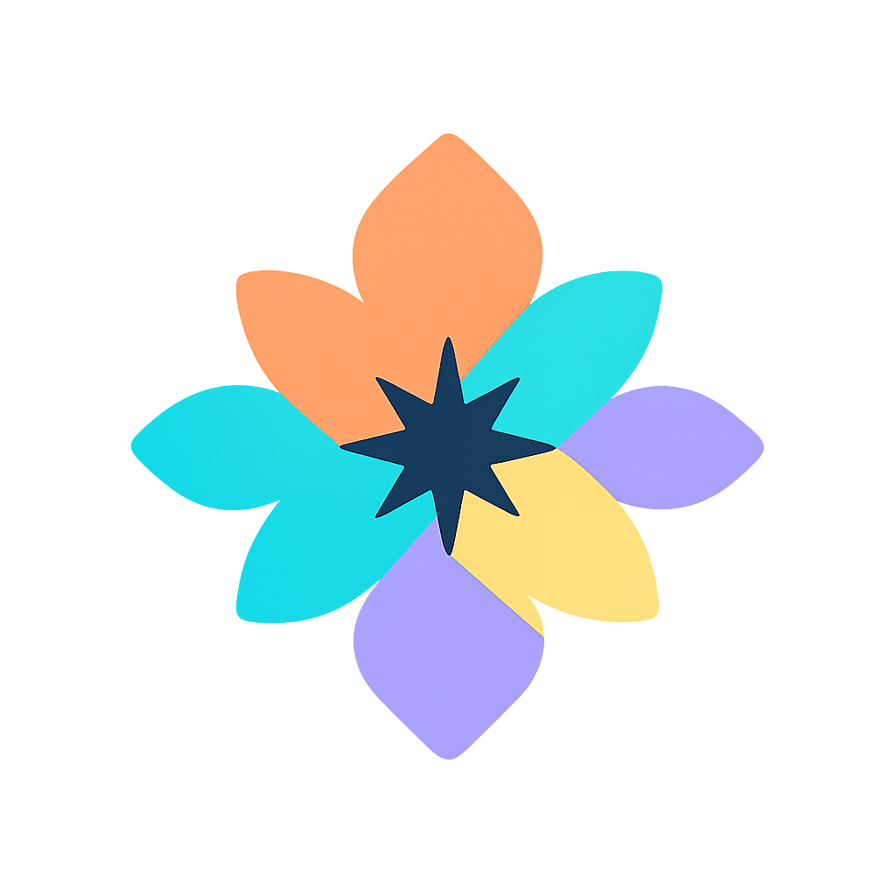

SensoryVerse est un terrain de jeu cognitif — conçu pour vous aider à découvrir comment votre esprit perçoit, se concentre et apprend le plus efficacement.
Créé par une équipe d’astrophysicien·ne·s, neuroscientifiques, entrepreneur·euse·s, concepteur·rice·s de jeux vidéo et spécialistes de l’IA, il mêle science et créativité : commencez par un court quiz pour cartographier votre « constellation » cognitive, puis explorez des mini-jeux — ou profitez de morceaux de musique de concentration inspirés par les archétypes de SensoryVerse — qui révèlent vos rythmes d’attention, de mémoire, de flexibilité et d’équilibre sensoriel.
Pendant des décennies, l’idée de « styles d’apprentissage » fixes (visuel, auditif, kinesthésique, etc.) a été populaire en éducation. Cependant, la recherche à grande échelle montre qu’enseigner strictement selon un style déclaré n’améliore pas de façon fiable les résultats. Ce qui compte vraiment, ce sont les traits cognitifs mesurables qui influencent la manière dont les individus traitent, retiennent et appliquent l’information.
SensoryVerse se concentre sur ces traits : rythme de l’attention, préférence pour un environnement sensoriel riche ou minimaliste, équilibre entre pensée analytique et associative, et rôle de l’émotion dans l’apprentissage. Ces facteurs sont étayés par la psychologie cognitive, les neurosciences et l’interaction humain–machine.
Au lieu de demander aux apprenant·e·s de s’adapter à un environnement fixe, les systèmes adaptatifs peuvent ajuster l’environnement à la personne. Cela est particulièrement pertinent pour les profils neurodivergents, où des différences dans l’attention, le traitement sensoriel ou le rythme social peuvent devenir des forces lorsque le contexte est ajusté.
Les informations proviennent de deux approches complémentaires :
Comparer ces deux signaux augmente la précision : quand perception de soi et comportement mesuré convergent, la confiance augmente ; quand ils divergent, cela met en lumière des zones de réflexion ou d’entraînement.
SensoryVerse s’inscrit dans un effort croissant visant à relier la science cognitive à une conception de l’apprentissage pratique et inclusive. Études prévues :
Commencez par le quiz rapide pour cartographier votre constellation cognitive. Ensuite, explorez des mini-jeux qui sollicitent l’attention, la mémoire et la flexibilité — et plongez dans des morceaux de concentration inspirés par les archétypes de SensoryVerse. Vos retours façonnent directement la prochaine itération.
Questions ou idées de collaboration ? cosmovis1216@gmail.com — Suivez-nous sur YouTube — Si vous souhaitez soutenir le projet, Ko-fi.